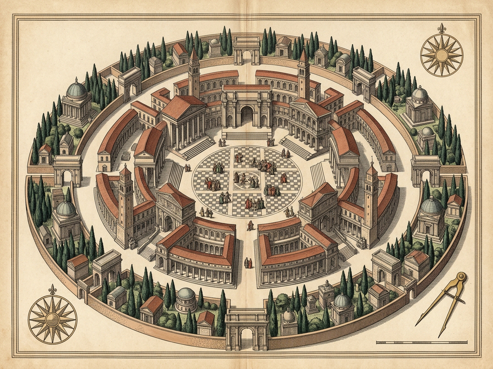
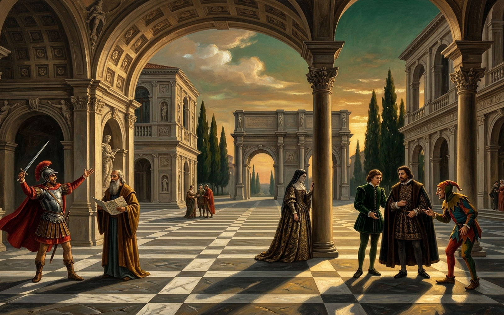

MELANIA
Scamozzi Piazza of Ceaseless Dialogues & Mortal Masks
Yr 1 · Cent. I · Beat #1 · Dropped: 0
[1] Knot ISword & Trencher
[2] Knot IIDice & Mirror
[3] Knot IIIStrongbox & Rose
[4] Knot IVBillet & Keys
[5] Knot VRosary & Stars
[6] Knot VIScales & 100k
Braggart Soldier · Ferrante Spavento
Beat #1 · Dropped Beats: 0 · Single Mask
“See where this notch bit through seven siege-towers before mortar dried upon their parapets!”
Gen 1 · Origin Cast -> Parasite · Unbroken square cue
13 Immortal Masks & Mortal Relay
Click actor/card to inspect; dblclick or [K] strikes mortal
[Y]Return +Years
[D]+10y Decade
[K]Strike Mortal
[C]Split->Chorus
[O]Concentrate->1
[M]Voices: On
[R]Reset
[P]Royal Plates
Braggart SoldierG1 · SingleFerrante SpaventoOrigin Cast
Year / CenturyYr 1 · Cent. I
Unbroken BeatsBeat #1 · Drop: 0
Cypress Necropolis0 Dead
Portico Newborns0 Born
Casc · Split · Solo0 / 0 / 0
Fallen Princes100,000
Secular Denouement · Epoch I
1.20%
Sword-boasts, locked strongboxes, and pawned coronets hold their opening balance across the checkered Scamozzi flags.
Yr 1 · Enter the square mid-sentence: 13 masks and 6 dialogue knots already ring across the Scamozzi stones.

Plate I · Concentric Piazza, Birth Porticoes & Outer Cypress Necropolis (1600×1200)

Plate II · Scamozzi Perspective of the 13 Masks & 100,000 Fallen Princes (1600×1000)